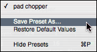
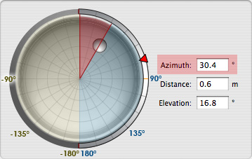
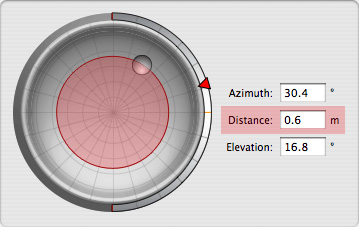

It also describes how to manage the presets of an Audio Unit, and how to map Audio Unit parameters to MIDI controllers.
The inspector is a window into the world of the Audio Units in the document. It provides navigational controls to browse the effects in the document, a view of the user interface of an effect, access to Thru Params, MIDI Parameter mapping, and preset management features.
The inspector has a toolbar at the top of the window that facilitates effect navigation as well as view and preset management.
The window title indicates the effect that is being inspected. It shows the input track name and the name of the effect viewed. The toolbar can be collapsed by clicking in the collapse button in the upper right hand corner of the window title bar.
The first popup button presents a navigation menu that allows you to change the track being inspected. The popup button displays the track name as well as the name of the group it is contained in. In the above image, Dry Mix is the current track and DLS Synth is the group name.
The second popup button lists all of the effects of the given track. Selecting an effect from this popup changes the effect displayed in the inspector. If an effect can be bypassed, there is a B button next to the name of the effect. Clicking this button will bypass the effect. If the audio unit is an effect, the effect name will have a number in parenthesis after the name: i.e., AUMatrixReverb (1). This number indicates that it is the first effect in the specified track. This can be useful if you have two effects that are the same audio unit in the same track since you can use this number to distinguish between the two effects.
The third popup is the preset popup. If the current effect has presets, the current preset will be displayed in the menu. This popup menu also has a three additional menu items:
The last popup is the view menu. This menu allows the selection of the view type:
The Generic View presents a simplified view of the Audio Unit that allows the modification of its properties and parameters. Audio Units that do not present a custom user interface will default to this view. To edit the parameters, change the control that corresponds with the name of the parameter you wish to modify.
The Generic Panner View presents an editor for Panner Audio Units that do not provide their own custom view.
The view provides a spherical panner control for editing Azimuth, Distance, and Elevation Parameters of the Audio Unit. The azimuth and distance relative to the listener in the center of the panner are represented by the circular control inside of the panner area.
|  |  |
|
Changing the panner azimuth |
Changing the panner distance |
As shown in the images above, the azimuth is the angle between the zero position (indicated by a vertical line from the center of the circle to the top) and the knob. Angles change from 0° to 180° clockwise on the right half of the circle (shown in blue) and from 0° to -180° counter clockwise on the left half of the circle (shown in light brown). To change the angle, drag the knob in the view, or change the numerical value directly. Note that you can lock the distance and only change the azimuth by holding down the shift key while moving the knob.
The distance is the distance in meters between the listener (in the center of the panner) and the source (represented by the knob). To change the distance, drag the knob towards the center to decrease the distance, or towards the edge of the panner to increase distance, or use the numeric text field to change the value precisely. The center of the circle represents 0 meters, and the edge of the panner represents a distance of 1 meter. Note that you can lock the azimuth and change only the distance by holding down the control key while moving the knob.
The elevation represents the angle from the horizon to a perpendicular plane (green line). In the user interface the elevation is a red triangle that moves along the edge of the panner. You can imagine that this is as a side view where the blue area represents the sky, and the green area represents the earth. All angles in the blue area above the horizontal plane (green line) are positive angles, and all angles below the horizontal plane are negative angles. To change the elevation, drag the red triangle or change the value numerically using the edit text field.
Below the spherical panner is a graph for modifying the attenuation curve of the sounds and specify how quickly the gain falls off as a function of distance. The reference distance is the point after which gain attenuates. To change these values, drag the crosspoint control or change the appropriate values numerically.
The generic panner view also shows the parameter values of the audio unit. These values can be changed numerically, or via the slider.
The Midi Editor View allows the modification of the MIDI Properties associated with the source of the Audio Unit. There are two types of Midi Editor views- one for Audio Unit Instruments, and one for Audio Unit Effects that allow MIDI input.
The inspector window allows the editing of MIDI properties of Audio Units that can take MIDI input.
The Midi Editor view for these Audio Units consists of a source popup and an active channel section. The MIDI Source popup menu lists the MIDI devices and endpoints that are available on the system. Selecting a source from the popup menu will route MIDI data from that source to the current Audio Unit Effect. Selecting none, disconnects the source.
In addition to the MIDI Source, you may specify the channels that you want to receive MIDI from. You can click a channel number to enable that channel, drag to select a range of channels, or command-click to select discontinuous channels.
If an Audio Unit effect such as the AULooper* supports MIDI parameter mapping, an additional section named MIDI Parameter Maps will appear after the Active Channels section. This section allows you to map a specific parameter of the Audio Unit to a MIDI device and modify its parameter value by moving the corresponding controller on the MIDI device. For more information, see MIDI Parameter Mapping.
Midi Parameter Mappings for a music effect
The Audio Unit Instrument Midi Editor is similar to the Audio Unit Midi Editor with the addition of two more sections that allow the configuration of MIDI Thru params. Editing these sections filter MIDI data sent from the MIDI source to the Audio Unit Instrument.
The Key Range section allows you to specify which keys should send data to the instrument. The image above shows an Active Key Range of D1 to A6. Any notes that are outside of this area will be filtered out and will not reach the instrument.
This section also allows you to transpose the notes that are coming in. If the Transpose Keys checkbox is enabled, the incoming midi notes will be transposed according to the Octaves and Semitones text fields before being sent to the instrument.
Last but not least, velocities of keys can be limited by the Limit Velocity checkbox. If this button is enabled, any notes with velocities outside of the specified range will be filtered out.
The Controllers section allows you to specify which channel commands should be sent to the active channel. Any commands that are not selected will be filtered out of the incoming MIDI data stream.
The Active Controllers popup allows you to determine which controllers you would like to filter. All and none are a convenience to enable or disable all controllers at once (including those controllers not explicitly represented by a checkbox). Some allows you to specify which specific controllers to send. Any controllers that are unchecked will be filtered out of the MIDI data stream.
Audio Unit Instruments such as the DLSMusicDevice and effects such as AULooper* support MIDI Parameter Mapping. This means that you can map a specific parameter of the Audio Unit to a MIDI device and modify its parameter value by moving the corresponding controller on the MIDI device. For more information, see MIDI Parameter Mapping.
Midi Parameter Mappings for an Audio Unit Instrument
The presents drawer presents a list of effects for an Audio Unit. These presets can either be built-in to the Audio Unit, or exist on disk in /Library/Audio/Presets. Items that are built-in to the Audio Unit, will appear under the Factory group, and items that exist on disk will appear under the Local group. These presets can be grouped into subfolders and the preset drawer will retain the group hierarchy. If you have added presets in the finder, clicking Rescan Presets will update the preset hierarchy.
Open the Preset drawer if it is not visible by choosing Show Presets from the Preset popup menu in the toolbar of the Inspector window. Navigate to the preset that you want to active (keyboard navigation is supported). Click on the preset name or press Enter to change the preset.
*AULooper ships with the CoreAudio SDK and is not installed as part of Tiger